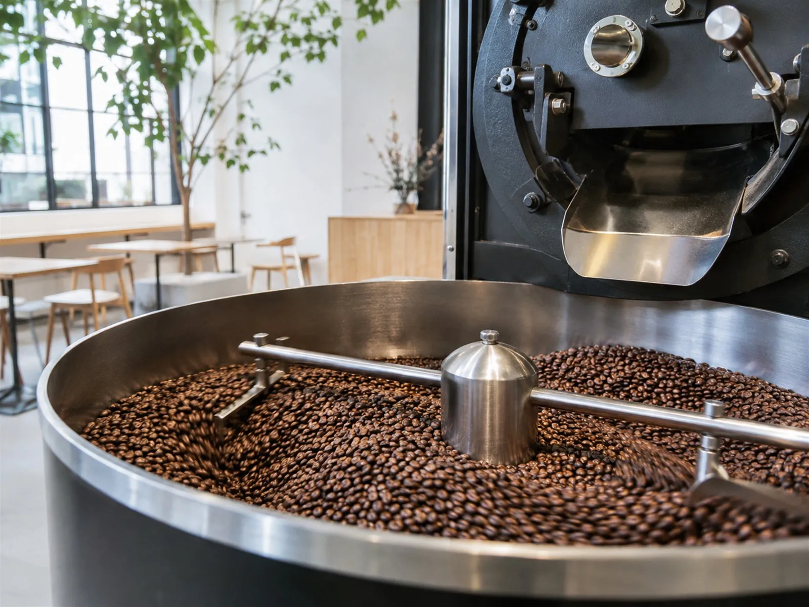

CONCEPT
一杯のコーヒーで、
暮らしを豊かに
Q.O.L. COFFEEは、2017年6月11日に、名古屋市中区丸の内の大津橋交差点の角地に開業しました。 焙煎所、カフェ、ギャラリーがひとつになった空間で、コーヒーを軸に、音楽やアート、デザインも取り入れています。
Quality Of Life
店名は「Quality Of Life」の頭文字。すべての品質にこだわり、コーヒーを通じて皆様の生活を豊かにしたい、という思いが込められています。
名古屋で生まれ育った店主は、幼いころから喫茶店を開く夢を持っていました。 料理の経験、コーヒー商社での勤務、メルボルンでのバリスタ経験、名古屋の老舗コーヒー店での勤務を経て、このお店を開いています。
いつもの一杯で、もっと豊かな毎日を。 公式Instagram（2026年10月1日）より
